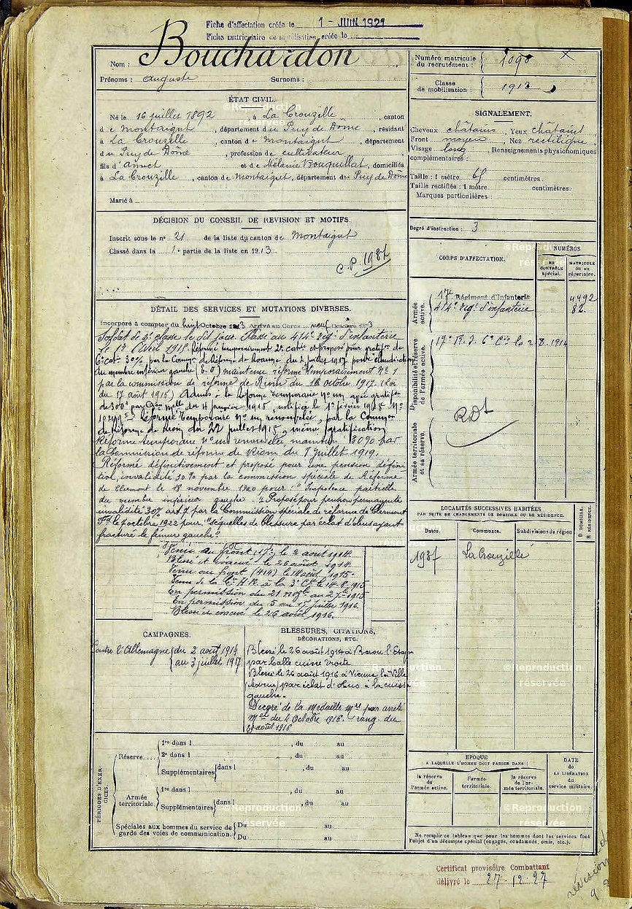

Antoine et Auguste (à droite)

Livret militaire d'Auguste
Auguste
Auguste est né le 16 Juillet 1892 au hameau des Raynauds, commune de la Crouzille. Il est le frère jumeau d’Antoine et également le parrain d’Augustine. Il sera blessé à deux reprises mais finalement reviendra sain et
sauf.
Il part au service militaire le 8 Octobre 1913 pour rejoindre le 17ème Régiment d’infanterie basé à Epinal, en tant que soldat de 2ème classe. Il recoit sa première instruction militaire au camp de Valdohon.
Il n’atteindra jamais la quille et partira directement au combat. Son régiment étant basé dans les Vosges, il est en fait aux avant-postes et sera au feu de l’action dès le début de l’offensive allemande
Dès la fin Juillet, l’ordre est donné au régiment de sécuriser les points de passage dans le secteur de Baccarat afin de retarder toute offensive allemande. Au fur et à mesure de leur avance, les allemands brûlent les
villages. C’est le 12 Août que les premiers affrontements ont lieu, et cela prend la forme de charges à la baionnette – le régiment dénombre ses premières pertes.
Auguste est blessé par balle à la cuisse gauche, le 26 Août dans la bataille du col de la Chippotte près de Raon l’Etape, une position clé menant sur la route d’Epinal.
Il est évacué le 29 Août sur Montferrand, avant de rejoindre Lyon le 4 Septembre, date à laquelle on lui retire la balle. Soigné à l’hopital temporaire de Sainte Foy Les Lyons, il est déclaré guéri à la fin du mois de
Novembre. Il retourne alors au dépôt du 17ème régiment à Lyon (actuel Lycée du Parc).
S’ensuit une période d’attente avant de retourner au front, ponctuée de missions au cours desquelles Auguste fait quelques convois, ce qui l’amène à voyager à travers la France (Rennes, Angers, Grenoble, Briancon, …). Il
devient également ordonnance d’un lieutenant et rejoint le 414eme régiment d’infanterie le 14 Avril 1915.
Dès le 14 Avril, le régiment arrive à Corbie dans la Somme (non loin d’Amiens) et rejoint directement les tranchées. S’ensuit une période d’alternance, cantonnement/montée au front, jusqu’en Novembre 1915 pendant laquelle
Auguste prendra part à la bataille du plateau de Notre Dame de Lorette. Le régiment est ensuite transféré en train à Lure près de Vesoul, et se retrouve à nouveau engagé dans une guerre de tranchées jusqu’en Janvier 1916.
En Mars, Le régiment est transféré à Watronville pour prendre part à la bataille de Verdun. Peut-être, Auguste apprend-t-il la mort de son frère dans cette même bataille mais dans un secteur different. Pour sa part, il est
blessé par éclat d’obus à la cuisse gauche le 26 Août, 2 ans jour pour jour après sa première blessure. Cette blessure lui vaudra la médaille militaire mais sera surtout la blessure qui marque la fin de sa carrière militaire.
Il est alors évacué à l’hopital de Chalons-sur-Marne. Commence ensuite une longue période de convalescence, durant laquelle il séjournera à l’hopital bénévole du chateau de Moisse (Creuse), Guéret et Vichy.
Il est finalement réformé temporairement le 2 Juillet 1917 et retourne définitivement à la ferme du hameau des Raynauds.